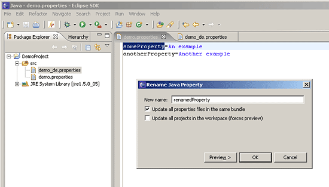
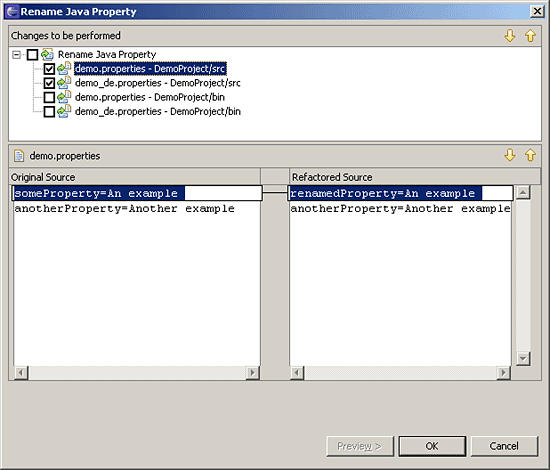

| Eclipse Corner Article |
Summary
Anyone who supports a programming language in an Eclipse-based IDE will be asked sooner or later to offer automated refactorings - similar to what is provided by the Java Development Tools (JDT). Since the release of Eclipse 3.1, at least part of this task?which is by no means simple?is supported by a language neutral API: the Language Toolkit (LTK). But how is this API used?
Leif Frenzel
April 12, 2006 (originally appeared in Eclipse Magazin Vol. 5, January 2006)
"Refactoring" is a programming technique for improving the quality of the source text (e.g. with regard to maintainability or extendibility) while preserving existing behaviour. This is done by the gradual reformulation of the code in which the semantics of the program part being edited is left unchanged. In order to make sure that no inadvertent errors are introduced, each refactoring is checked using a suite of unit tests.
Larger refactorings can involve a considerable amount of program code and work. As long as they are implemented in small steps, however, they can often be regarded simply as a sequence of atomic changes. These changes, such as the renaming of variables or the extraction of a program block into a new method, are also described as refactoring. An extensive catalogue with a precise description of the steps required - as well as the potential risks - is provided by [1].
Reliability is the greatest when the atomic steps of the refactoring can be automated - not only because a tool guarantees the correctness of the automated steps but also because the developers that carry out the refactoring are able to pay attention to the larger context instead of having to carry out the numerous small changes to the actual source code. The Java IDE of Eclipse (JDT) now offers a variety of such automated refactorings (the most common of these are described in detail in [2]).
The JDT team has extracted the recurring elements in the implementation of these refactorings into a language neutral layer that is now available in the Eclipse platform as a standalone API and can thus be used independently of the Java support. This layer is called Language Toolkit (LTK) and can be found in theorg.eclipse.ltk.core.refactoring
and
org.eclipse.ltk.ui.refactoring
plug-ins. It also includes an infrastructure (the so-called refactoring
participants), which enables other plug-ins to take part in refactorings
selectively via extensions (please see the box "
Refactoring Participants
").
Refactoring Participants (as of Eclipse 3.2M2)
PDE (the Plug-in Development Environment of Eclipse) provides an excellent example of the use of Refactoring Participants. It manipulates the manifest files for the development of plug-ins (primarily
Manifest.mfandplugin.xml), in which Java classes are often named. If the name of a class changes during a refactoring of the Java source code, then the declaration of this class must also change in the manifest file. PDE participates in Java refactorings in order to meet this requirement. The renaming of classes that are referenced in manifest files is recognised by the PDE and the appropriate adjustments are made.Refactorings outside the Java-IDE
Eclipse is probably still best known as a Java IDE. The potential of Eclipse as a platform for the integration of tools that come from different programming languages environments is also becoming increasingly evident, however. This can be shown particularly well using the refactoring participants: A project that is developing an IDE for C/C++ based on Eclipse has been in progress for a number of years at Eclipse.org: The C/C++ Development Tools (CDT) project. Since the appearance of its version 3.0 [3], CDT offers automated refactorings that are implemented based on LTK.
Since these refactorings can now be used by CDT users, it is a small step to use refactoring participants in an area that combines both programming languages: Java Native Interface (JNI) bindings. The JNI makes it possible to bind functions from a library implemented in C to methods declared as native in a Java class so that they can be invoked from Java code. To do this, however, the C function must comply with certain naming conventions (i.e. the name of the Java method and class that it belongs to is encoded in its name). The native implementation of the following method:
package com.xyz; public class NativeImpl { private static native void someMethod(); }is bound to in the C-code as follows:
JNIEXPORT void JNICALL Java_com_xyz_NativeImpl_someMethod(JNIEnv* env, jclass cl)In a workspace in which Java and C development are combined, it would be desirable to have refactorings on the Java side (like the renaming or moving of native methods or classes which contain such methods), as well as those on the C side (the renaming of JNI-bound functions) be recognised on the corresponding side, and if the appropriate changes could be performed automatically. The refactoring participants would have to be implemented in a standalone plug-in in order for JDT and CDT to remain mutually independent of each other. Such a plug-in would ideally be an extension of both development environments.
The following implementation example
should enable the renaming of keys in properties files. Several such
files (which may be in a single project, but could also be distributed
throughout the entire workspace) are often combined into a bundle for
the localisation of user interface texts. A file containing default
values might be named texts.properties (no language
information is included in the file name).
Related files are identified with the help of a naming convention.
The file texts_de.properties contains translations into
German, texts_fr.properties contains French texts, etc. The
renaming of a key in such a file usually entails changes in all other
files of the bundle. Such a process is ideal for automation - and the
example implementation makes this possible.
When the user opens a properties file in a text editor and selects a property key, he can start a refactoring by selecting an entry in the context menu that renames the key in the file, optionally in all files of the associated bundle or even in all properties files in the workspace. This refactoring leverages the same familiar user interface as those provided by the Java IDE; including the the same preview option. This is implemented with the help of LTK.

Figure 1: Refactoring of property keys
Refactorings are transformations of the program; in most cases, they are a manipulation of source code. In order to carry out such transformations (and the analyses preceding them), a programmatically manipulable representation of the developed system is required.
JDT for example has an object model of all language elements (classes, fields, methods - both in the source text and in libraries or compiled class files) for the entire Eclipse-workspace (all projects) - as well as a (generated on demand) representation of individual source files as an abstract syntax graph (Abstract Syntax Tree - AST). This enables a specific search for occurrences and language elements. Even simple refactorings contain partial processes such as "Find all places where the variable x is used". A plug-in will hardly be able to provide automated refactorings without tools for such analyses.
The theoretical background is just as essential (almost even more important): A very good understanding of the places in which the source code must change is required (and what the code should look like after the change) so that the program semantic is preserved. A formal description derived from the language specification is ideally available. With such a description, the code manipulations themselves as well as the corresponding test cases can be developed.
Refactorings in Eclipse follow an exact, predefined procedure:
checkInitialConditions()).checkFinalConditions())
and the individual changes in the source text are calculated (createChange()).The API classes in both the LTK core and UI plug-ins incorporate this sequence. The individual steps will be explained in detail below based on the code of our example plug-in.
A subclass of org.eclipse.ltk.core.refactoring.Refactoring
must always be created. This class is the core of a refactoring; all
validations of the necessary operations are performed within it; even
the actual changes to the source text are calculated here. The methods
mentioned in the process under 2. and 4. are part of the protocol of
this class.
If refactoring participants should be supported, the class ProcessorBasedRefactoring
must be extended instead; the actual functionality is then delegated to
an implementation of a RefactoringProcessor. In addition to
the lifecycle methods of the refactorings, this also defines an entry
point for loading the participants. (Since the example for this article
does not provide for any participants, the implementation remains
empty.)
A subclass of org.eclipse.ltk.ui.refactoring.RefactoringWizard
is required on the UI side. It is primarily responsible for managing the
individual pages of the Wizard, which the user scrolls through by means
of 'Next' and 'Back', and for invoking the final operation when
finishing the process. All these tasks are already taken over by the
super class (RefactoringWizard). It is necessary to provide
the wizard with a reference to a Refactoring subclass and
to insert one?s own additional wizard pages (derived from UserInputWizardPage)
if required. These pages are displayed during the course of the
refactoring in the wizard.
Step 1. The typical trigger for a refactoring is an action of the
user when working in an editor or a click on a menu item in the Outline
View. In both cases, it is an implementation of an Eclipse action that
provides the entry point for the refactoring. In the run()
method, instances of RenamePropertyRefactoring and RenamePropertyWizard
(the respective subclasses of Refactoring or RefactoringWizard
in the example implementation) are created and the refactoring lifecycle
of the LTK is started by means of a RefactoringWizardOpenOperation
(Listing 1).
First, the available information about what the user selected when he
triggered the refactoring is collected. With the current selection, it
is possible to determine which language element should be renamed, moved
or manipulated in another way. The example plug-in has a text selection;
the selected text and its position in the text document are saved in an
Info object, which is evaluated later in the RenamePropertyRefactoring.
Listing 1 Class RenameProperty (ui.actions)
RefactoringProcessor processor = new RenamePropertyProcessor( info );
RenamePropertyRefactoring ref = new RenamePropertyRefactoring( processor );
RenamePropertyWizard wizard = new RenamePropertyWizard( ref, info );
RefactoringWizardOpenOperation op = new RefactoringWizardOpenOperation(wizard );
try {
String titleForFailedChecks = ""; //$NON-NLS-1$
op.run(getShell(), titleForFailedChecks );
} catch( InterruptedException irex ) {
// operation was cancelled
}
Step 2. The LTK assumes control of the subsequent process. It first
invokes the method checkInitialConditions() on the
refactoring object. This method should perform a quick check to
determine whether the basic conditions have been met for the
refactoring. The example implementation merely verifies that the user
has actually selected an existing key in a properties file. If it
encounters a fatal situation (e.g. a write-protected source file), it
generates an object of the type RefactoringStatus, which contains more
information about the problem (Listing 2). In
such a case, the LTK does not continue with the refactoring but instead
informs the user about the abort by means of a dialogue box.
Listing 2 Class RenamePropertyDelegate (core)
RefactoringStatus checkInitialConditions() {
RefactoringStatus result = new RefactoringStatus();
IFile sourceFile = info.getSourceFile();
if( sourceFile == null || !sourceFile.exists() ) {
result.addFatalError( CoreTexts.renamePropertyDelegate_noSourceFile );
} else if( info.getSourceFile().isReadOnly() ) {
result.addFatalError( CoreTexts.renamePropertyDelegate_roFile );
} else if( isEmpty( info.getOldName() ) || !isPropertyKey( info.getSourceFile(), info.getOldName() ) ) {
result.addFatalError( CoreTexts.renamePropertyDelegate_noPropertyKey );
}
return result;
}
Step 3. After determining that there are no fundamental obstacles
preventing the renaming of the key, the wizard is displayed and asks the
user for additional information: For example, the new name that he wants
to assign for the language element; as well as information about the
scope where the refactoring should be applied (only in the current
source file, in the project, or in the entire workspace). The UI
required for this purpose is implemented as subclasses of UserInputWizardPage.
The data entered here is made available to the RenamePropertyRefactoring
with the help of the info object (which plays the role of a presentation
model).
Step 4. Before the wizard shows the last page, which offers a
detailed preview on the changes to be performed, two things happen: The
method checkFinalConditions() is invoked on the refactoring
object and the actual changes are calculated on all of the files
concerned. The latter must be implemented in the method createChange().
The example implementation demonstrates these two steps by first
searching all properties files concerned in the workspace and checking
to see whether they can be edited; at the same time, occurrences of the
property key are found. A TextFileChange instance that
describes the replacement of a range of text at a given position in the
file is generated for each of these occurrences (Listing
3). These Change objects are arranged into a tree-like structure
whose root is returned by the method createChange(). (It is
out of the scope of this article to discuss the manipulation of text
files across the entire workplace. A good introduction to this topic is
offered by [4]).
Listing 3 Class RenamePropertyDelegate (core)
private Change createRenameChange() {
// create a change object for the file that contains the property
// which the user has selected to rename
IFile file = info.getSourceFile();
TextFileChange result = new TextFileChange( file.getName(), file );
// a file change contains a tree of edits, first add the root of them
MultiTextEdit fileChangeRootEdit = new MultiTextEdit();
result.setEdit( fileChangeRootEdit );
// edit object for the text replacement in the file, this is the only child
ReplaceEdit edit = new ReplaceEdit( info.getOffset(),
info.getOldName().length(),
info.getNewName() );
fileChangeRootEdit.addChild( edit );
return result;
}
Step 5. If the user does not skip this by pressing the "Finish" button immediately, a preview is displayed as the last page of the wizard; here the user can view all the pending changes in detail (and deselect some if necessary). No files have actually been changed in the workspace up to this point. All changes to the files are applied only after they have been confirmed by the user. (If change objects from the LTK are used exclusively, then undo-functionality is provided as a small present.)

Figure 2: The preview page gives an overview of all changes in the
course of the refactoring.
The Language Toolkit facilitates the implementation of automated
refactorings. It defines the process of a refactoring and provides
abstract classes in the core (Refactoring, Change)
as well as UI components (RefactoringWizard) that largely
cover the language-neutral part of an implementation. The language
specific calculation of the changes in the source text can be inserted
in this frame so that users can implement the refactoring in the
familiar form of the Java refactoring support known from JDT.
Leif Frenzel is the Senior Architect at Innoopract. His main field of work is the Eclipse-Distribution Yoxos as well as development environments based on the Eclipse platform. In addition to this, he is the author of Open-Source-Plug-ins for the Support of Functional Programming Languages in Eclipse.